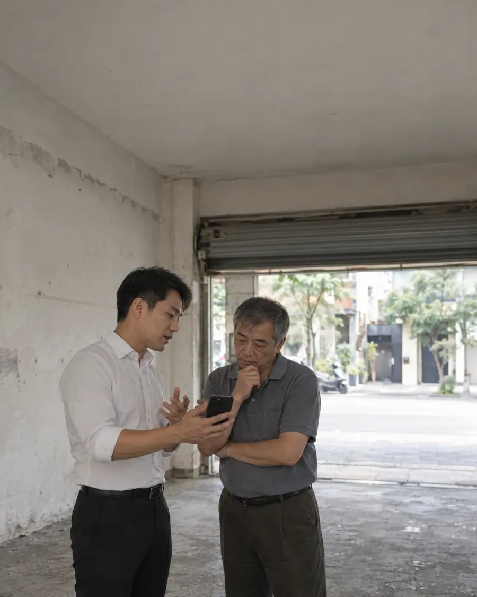

02客戶管理三年前的客戶，10 秒找到只記得漢生東路、1 樓店面？搜尋框輸入，電話地址歷史紀錄全出來。不靠記憶、不靠名片、不怕時間久。這是你多年累積的業務資產，從第一筆客戶到現在，不該散落各地。永久保存 · 秒搜尋了解這項功能 →
03AI 軍師AI 助理內建，不用切換行情分析、話術建議、市場早報、客戶摘要，全部在系統裡直接問。不用開其他 AI 工具、不用複製貼上、不用在五個分頁切來切去。一個畫面，所有 AI 需求。一站式 AI 工作台了解這項功能 →